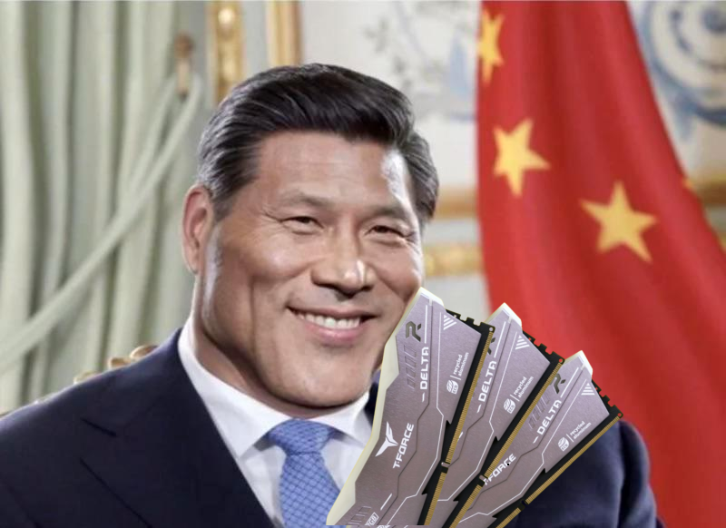
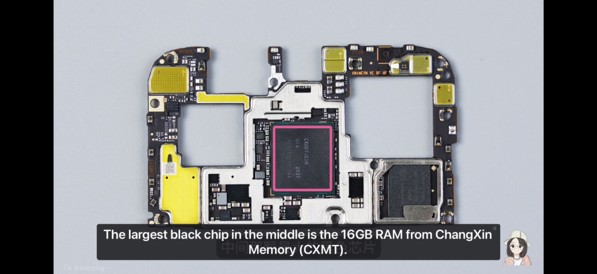

The Cheap Chinese RAM Myth

While the internet loves the narrative of a disruptive, ultra-cheap Chinese tech revolution bringing global giants to their knees, the reality of the semiconductor industry is dictated by physics, geopolitical sanctions, and brutal wafer economics.
The viral posts showing off dirt-cheap memory modules on platforms like AliExpress are not entirely fake, but they represent a fundamental misunderstanding of the global DRAM (Dynamic Random-Access Memory) market. Often, this hype is deliberately manufactured. It is not uncommon to see attention-seekers on platforms like Twitter taking advantage of the language barrier on Chinese e-commerce screenshots to make domestic DRAM look astronomically cheaper than it actually is. They will frequently farm engagement by deceptively comparing the price of a Chinese 16GB kit (two 8GB sticks) against a Western 32GB kit (two 16GB sticks). Once you adjust for actual capacity and specifications, the illusion of a market-breaking discount quickly evaporates.
Once you strip away the social media engagement bait, here is a breakdown of why the "cheap RAM revolution" is vastly overstated, and what is actually happening inside China's memory sector as of 2026 (spoiler: price won't be dropping any time soon).
1. The "Bargain" is Mostly the Secondary and Legacy Market
Even when the ultra-cheap RAM sticks sold by white-label or budget brands (such as Asgard, Gloway, or Juhor) are listed accurately, they do not represent a breakthrough in advanced manufacturing. These components are primarily a byproduct of the secondary IC (integrated circuit) market and a glut in legacy production.
Many of these budget sticks utilize "down-binned" chips, silicons that failed to meet the strict voltage or frequency tolerances required by premium enterprise brands, but is still functional for casual consumer use. Furthermore, as China's leading memory fab, ChangXin Memory Technologies (CXMT), aggressively scaled up its older 19nm DDR4 production, it flooded the legacy market. This drove down DDR4 prices globally, allowing budget assemblers to liquidate stock. However, this "dumping" effect applies strictly to last-generation, commoditized technology and not the cutting-edge DDR5 or AI-focused memory shaping the future.
2. The Node and Yield Deficit
In semiconductor manufacturing, profitability is entirely dependent on yield (the percentage of functional chips per silicon wafer) and node size (how small the transistors are).
The global "Big Three" (Samsung, SK Hynix, and Micron) control over 90% of the high-end DRAM market. They utilize Extreme Ultraviolet (EUV) lithography to produce advanced DDR5 on ultra-dense 12nm to 14nm-class nodes.
Due to strict US export controls, Chinese foundries like CXMT are banned from purchasing EUV machines. Instead, they must rely on older Deep Ultraviolet (DUV) machinery, forcing them to use a costly and time-consuming process called multi-patterning to achieve higher densities. Consequently, CXMT's DDR5 is currently produced on a larger 16nm/17nm node.
While CXMT has made impressive strides, recently improving their DDR5 yield from an initial 50% to roughly 80%, their chips are physically larger, consume more power, and cost more to produce per gigabyte than those made by the Big Three. To put concrete numbers on it: a Samsung DDR5 die measures approximately 48.9mm², while a comparable CXMT DDR5 die comes in at 68.06mm², roughly 39% larger. That difference is enormous in wafer economics: a larger die means fewer chips cut from each silicon wafer, more wasted edge material, and a fundamentally higher cost per gigabyte before you even factor in the lower yield. You cannot undercut global competitors on price when your manufacturing baseline inherently requires more raw silicon and energy to produce the same capacity.
3. The Mobile DRAM Shortage and a Captive Domestic Market
The idea that China wants to flood the global market with cheap memory ignores a critical reality: China cannot even produce enough advanced memory to satisfy its own domestic demand. This constraint has created a massive, localized shortage, most notably in the smartphone and AI sectors.
If you want proof that cheap mobile memory is a myth, look no further than Xiaomi President Lu Weibing. At MWC 2026, Lu delivered a stark warning to the industry, stating that the current memory price surge is "unprecedented" and expected to persist until the end of 2027. He revealed that the quoted prices for memory chips in the first quarter of 2026 had soared to nearly four times the level of the same period last year. To put it in perspective, Lu noted that the raw cost of a standard 12GB RAM + 256GB storage configuration had jumped from roughly 30 yuan during the market low to approximately 120 yuan. Consequently, the era of budget phones featuring massive memory configurations is disappearing, and manufacturers are being forced to raise consumer retail prices.
This severe pricing pressure is deeply tied to domestic supply bottlenecks. Modern premium smartphones rely on highly efficient Low-Power DRAM (LPDDR5X). Because Chinese tech giants like Huawei are on the US Entity List, they are completely cut off from purchasing this advanced mobile memory from Micron, Samsung, or SK Hynix. As a result, Huawei is forced to rely entirely on CXMT to supply the RAM for its flagship phones and laptops. Other domestic smartphone makers are also aggressively securing supply from CXMT, both to mitigate geopolitical risk and out of desperation when they cannot secure enough global allocation from the Big Three. With major manufacturers buying up every functional LPDDR5X chip available, there is simply zero surplus inventory to sell at a discount overseas.

This domestic bottleneck is even more severe when it comes to the current gold rush in silicon: High Bandwidth Memory (HBM). HBM is physically stacked and vertically connected to power AI accelerators. Because Huawei's highly anticipated Ascend AI accelerators cannot use SK Hynix or Micron chips, they rely entirely on domestic HBM3. CXMT is desperately trying to build HBM capacity, but yields on this complex packaging are notoriously difficult to master. Every single functional AI memory chip is immediately absorbed by domestic tech giants willing to pay a premium for survival.
4. A Protected Moat for the Big Three
Traditionally, when a state-subsidized competitor enters a market, legacy companies are forced to slash prices. Geopolitics has completely insulated the Big Three from this dynamic in the high-end sector.
Strict federal regulations (such as Section 889 of the NDAA) and data security mandates prevent Western hyperscalers like Amazon (AWS), Microsoft, and Google from allowing Chinese silicon into their data centers. Because the largest volume buyers in the world are legally prohibited from touching CXMT's advanced DRAM or HBM, therefore Samsung, SK Hynix, and Micron face no downward pricing pressure from China in the highly lucrative enterprise space.
5. The YMTC Lesson
Chinese memory makers are acutely aware of the dangers of being too globally disruptive. In 2022, China's flagship flash storage manufacturer, Yangtze Memory Technologies Corp (YMTC), shocked the industry by developing a 232-layer NAND chip that equaled the best Western technology.
Their reward for this technological breakthrough was being placed on the US Entity List, which cut them off from vital supply chains, crippled their global expansion, and forced them to rely on massive multi-billion-dollar bailouts from the Chinese government just to survive. CXMT and other domestic players absorbed this lesson: aggressive global expansion of cutting-edge tech invites devastating sanctions. Their current mandate is focused on achieving domestic self-sufficiency to insulate China from Western blockades, not winning a price war on the global market.
The Bottom Line
The "China Price" is real, but it is mostly restricted to older, legacy hardware. If you are building a budget PC and want a cheap 16GB kit of standard DDR4 from a whitelabel brand on AliExpress, the secondary market will happily provide it, assuming the listing is not just a deceptive social media screenshot (kek). But the expectation that this dynamic will bleed into cutting-edge DDR5, mobile smartphone memory (LPDDR5X), or the HBM required for the AI revolution, is a fantasy.
Physics, low yields on complex packaging, and an insatiable captive domestic market guarantee that premium memory will remain a tightly constrained, highly expensive commodity for the foreseeable future.